原技能的视觉体系，完整保留。
以下使用原技能已有媒体：33 个观察节选与 23 个原创扩展。原视频、示意和已确认短样的性质各自保留；新融合示例另有独立入口。
开场、正文与界面示例
资料工作台 UI
Mac 桌面与相册开场
人物侧边开场
时间线开场
小圆窗正文工作台
口播驱动扩展
连续对象 X21–X23
56 项原动效图鉴
O01 · 分批建立
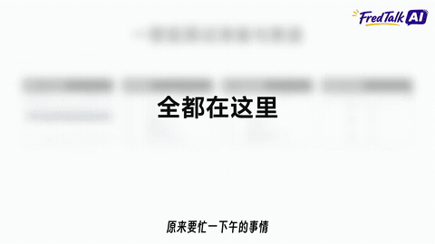
原片观察节选 · 原说明与来源
O02 · 当前对象放大
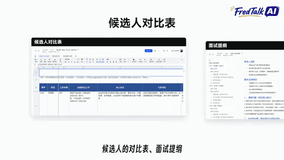
原片观察节选 · 原说明与来源
O03 · 景深堆叠
原片观察节选 · 原说明与来源
O04 · 多卡归并
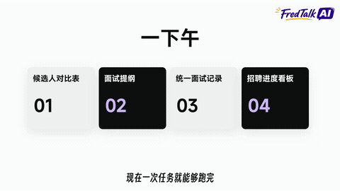
原片观察节选 · 原说明与来源
O05 · 结果脱离容器
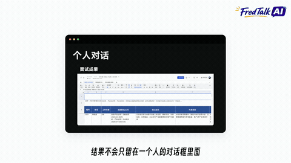
原片观察节选 · 原说明与来源
O06 · 同一窗口换内容
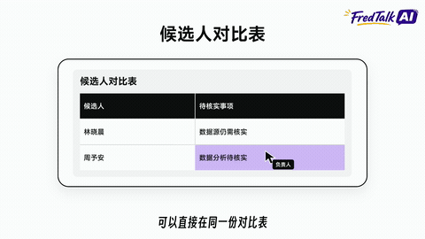
原片观察节选 · 原说明与来源
O07 · 网格积累
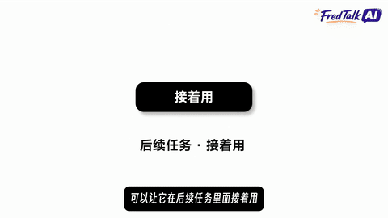
原片观察节选 · 原说明与来源
O08 · 连续扩列
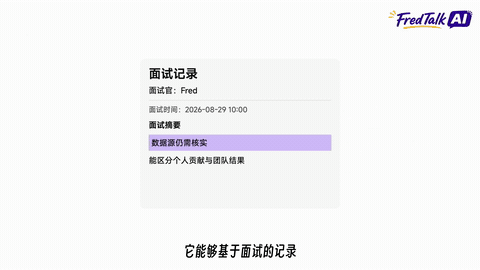
原片观察节选 · 原说明与来源
O09 · 分支生长
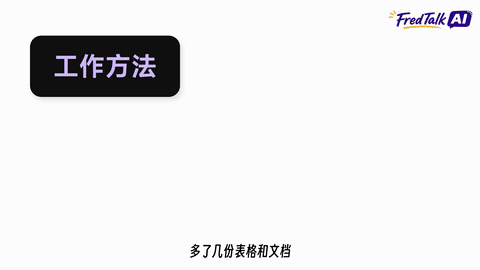
原片观察节选 · 原说明与来源
O10 · 分支焦点交接
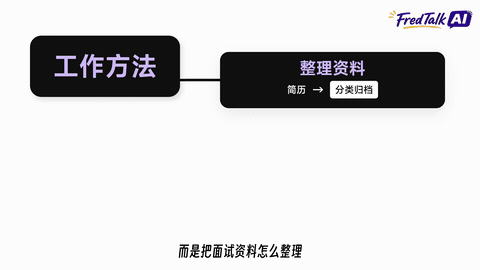
原片观察节选 · 原说明与来源
O11 · 字段贯穿链条

原片观察节选 · 原说明与来源
O12 · 文档外加新容器
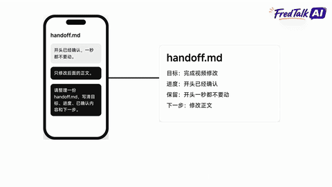
原片观察节选 · 原说明与来源
O13 · 并置比较
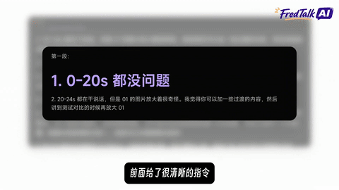
原片观察节选 · 原说明与来源
O14 · 数量级对比
原片观察节选 · 原说明与来源
O15 · 开关和进度
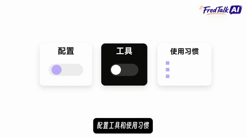
原片观察节选 · 原说明与来源
O16 · 完成勾选
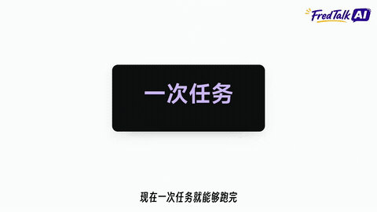
原片观察节选 · 原说明与来源
O17 · 背景退焦
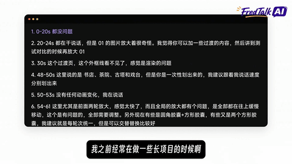
原片观察节选 · 原说明与来源
O18 · 关键词提取
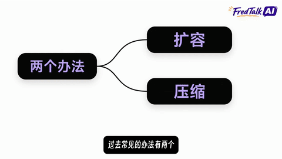
原片观察节选 · 原说明与来源
O19 · 协作接入
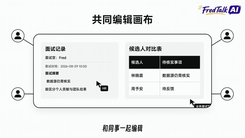
原片观察节选 · 原说明与来源
O20 · 窗口内缩放滚动
原片观察节选 · 原说明与来源
O21 · 累积荧光笔
原片观察节选 · 原说明与来源
O22 · 搜索逐字输入
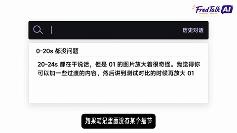
原片观察节选 · 原说明与来源
O23 · 过滤并上移
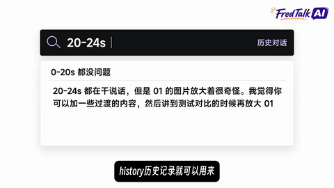
原片观察节选 · 原说明与来源
O24 · 原文重排强调
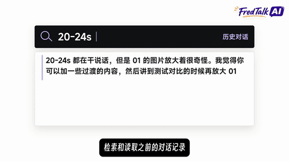
原片观察节选 · 原说明与来源
O25 · 消失或灰化
原片观察节选 · 原说明与来源
O26 · 状态标签切词
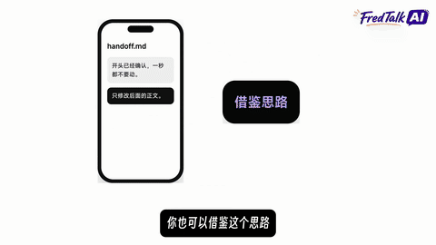
原片观察节选 · 原说明与来源
O27 · 选中文字再替换
原片观察节选 · 原说明与来源
O28 · 条目升格为主结论
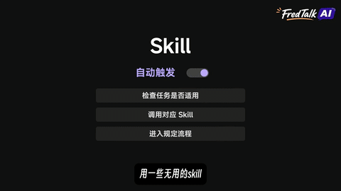
原片观察节选 · 原说明与来源
O29 · 标志让位
原片观察节选 · 原说明与来源
O30 · 真实录屏聚焦
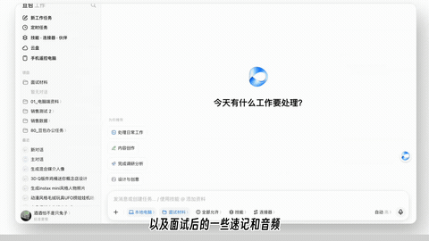
原片观察节选 · 原说明与来源
O31 · 黑色章节页
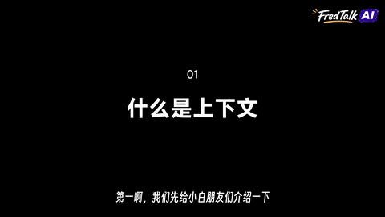
原片观察节选 · 原说明与来源
O32 · 场景水平接力
原片观察节选 · 原说明与来源
O33 · 人物引导与回收
原片观察节选 · 原说明与来源
X01 · 遮罩揭字
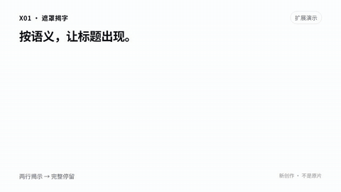
原创扩展示意 · 原说明与来源
X02 · 保位排序
原创扩展示意 · 原说明与来源
X03 · 局部放大镜
原创扩展示意 · 原说明与来源
X04 · 图解匹配到实录
原创扩展示意 · 原说明与来源
X05 · 分段步骤条
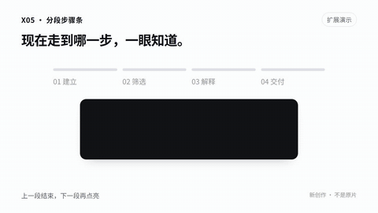
原创扩展示意 · 原说明与来源
X06 · 差异层切换
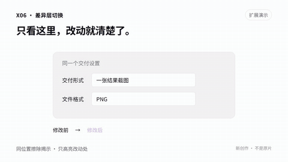
原创扩展示意 · 原说明与来源
X07 · 局部跟随聚焦
原创扩展示意 · 原说明与来源
X08 · 轻微纵深翻面
原创扩展示意 · 原说明与来源
X09 · 重音接力
原创扩展示意 · 原说明与来源
X10 · 追问递进
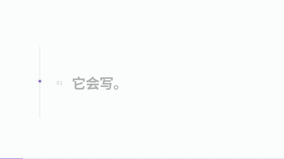
原创扩展示意 · 原说明与来源
X11 · 因果传导
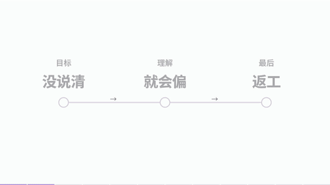
原创扩展示意 · 原说明与来源
X12 · 误区纠正
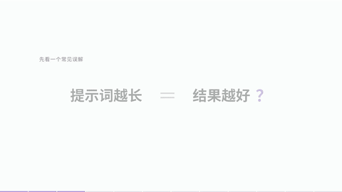
原创扩展示意 · 原说明与来源
X13 · 句子拆步骤
原创扩展示意 · 原说明与来源
X14 · 层层剖开
原创扩展示意 · 原说明与来源
X15 · 类比变形
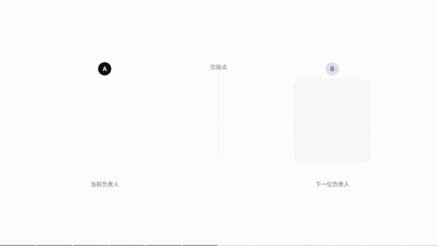
原创扩展示意 · 原说明与来源
X16 · 数值尺量
原创扩展示意 · 原说明与来源
X17 · 时间折叠
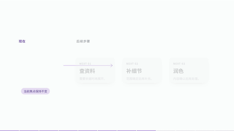
原创扩展示意 · 原说明与来源
X18 · 证据落点
原创扩展示意 · 原说明与来源
X19 · 首尾回扣
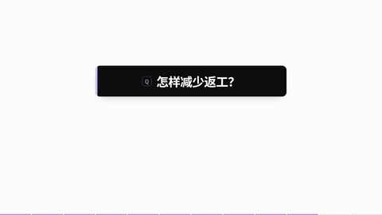
原创扩展示意 · 原说明与来源
X20 · 结论拼句
原创扩展示意 · 原说明与来源
X21 · 资料纵深归并
原创扩展示意 · 原说明与来源
X22 · 仓库窗口连续推镜
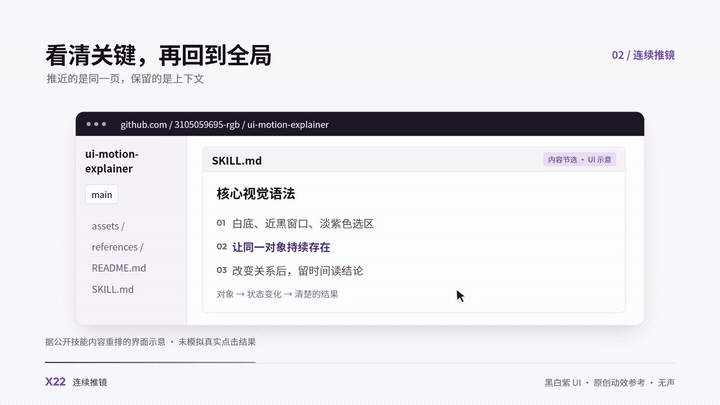
原创扩展示意 · 原说明与来源
X23 · 数据文件曲线交接
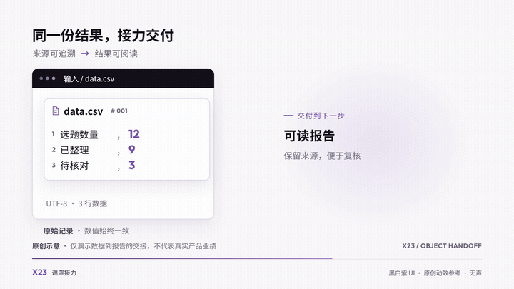
原创扩展示意 · 原说明与来源